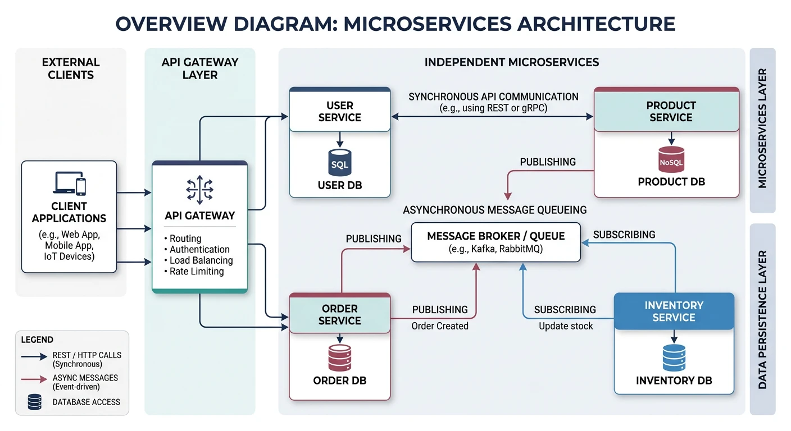
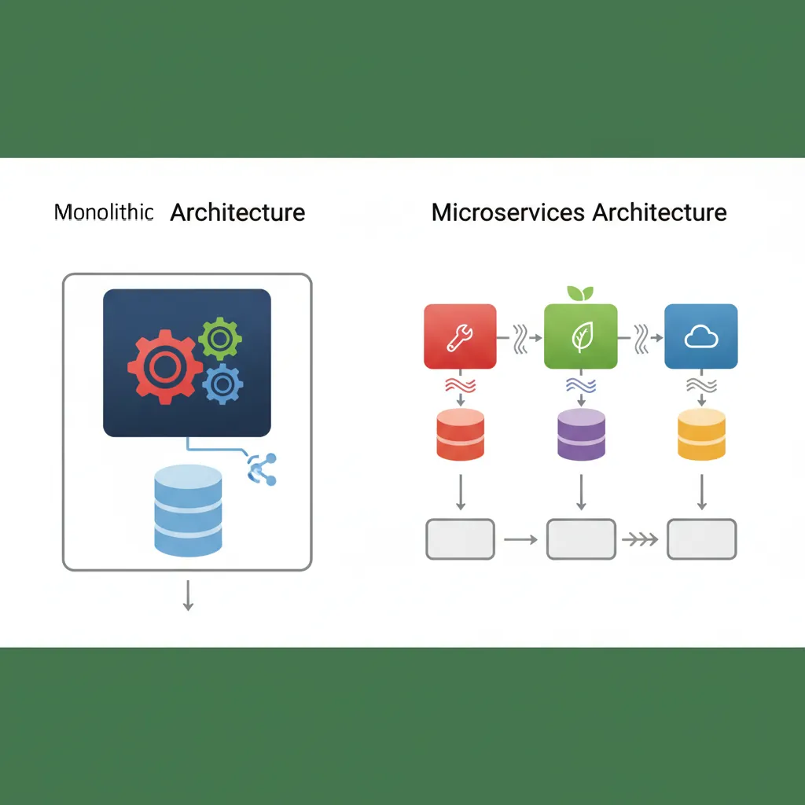
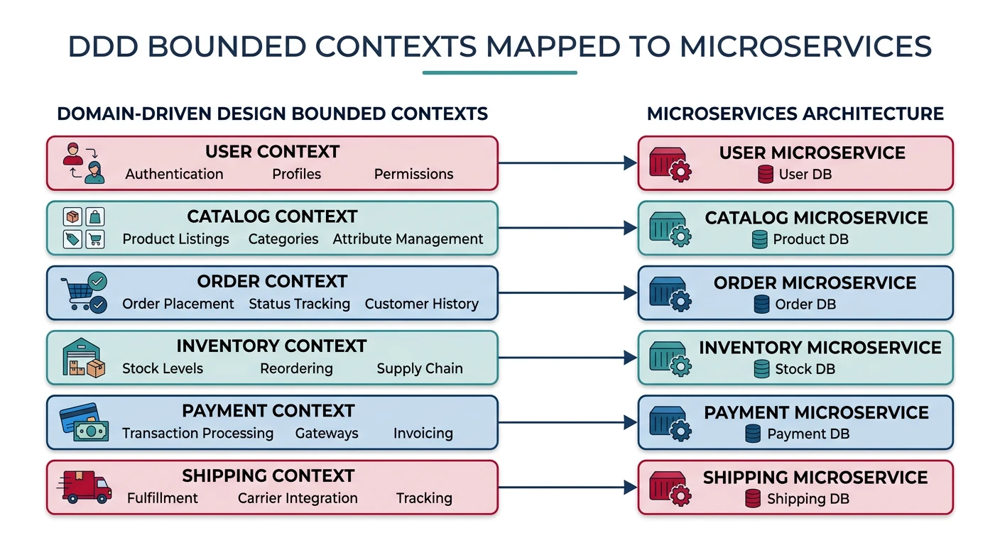
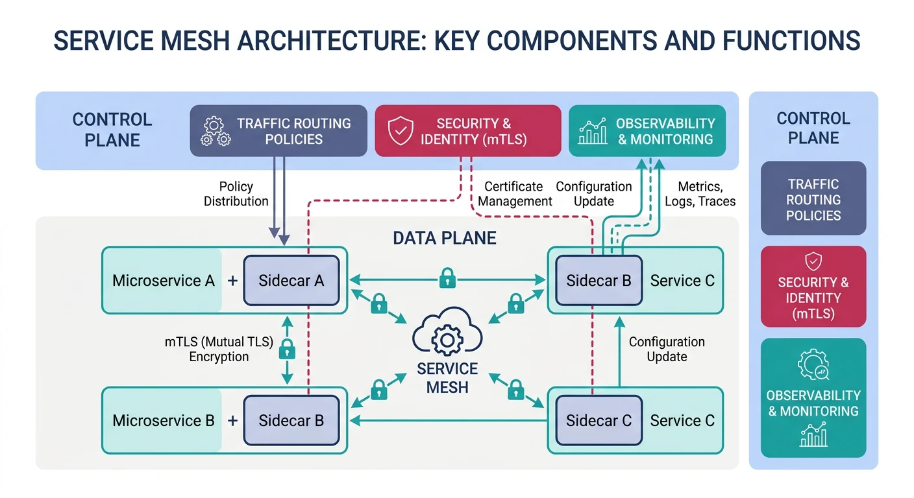
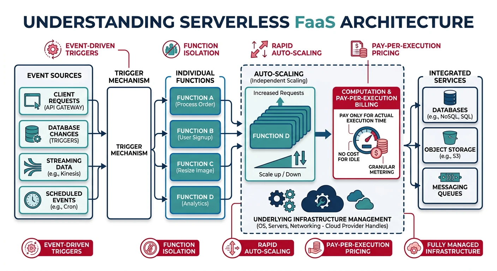

System Design Series Part 5: Microservices Architecture
January 25, 2026Wasil Zafar85 min read
Master microservices architecture patterns for building scalable, maintainable systems. Learn service decomposition, API gateways, service mesh, containerization, and Kubernetes orchestration.
Microservices architecture structures an application as a collection of loosely coupled, independently deployable services. Each service is owned by a small team and focuses on a specific business capability.

Microservices architecture overview — independently deployable services with separate data stores, communicating through well-defined APIs and async messaging
Key Insight: Microservices aren't always the answer. Start with a monolith and extract services as complexity grows and team boundaries become clear.
Core Principles
Single Responsibility: Each service does one thing well
Loose Coupling: Services interact through well-defined interfaces
High Cohesion: Related functionality grouped together
Independent Deployment: Deploy services without affecting others
Decentralized Data: Each service owns its data store
Failure Isolation: One service failure doesn't crash the system
Monolith vs Microservices
Understanding when to use each architecture is crucial:

Monolith vs microservices — a single deployable unit with shared database compared to independently deployable services with dedicated data stores
Aspect
Monolith
Microservices
Deployment
Deploy entire application
Deploy services independently
Scaling
Scale entire application
Scale individual services
Technology
Single tech stack
Polyglot (different stacks per service)
Team Structure
Large, cross-functional
Small, service-owning teams
Complexity
In-process calls
Network calls, distributed systems
Data
Shared database
Database per service
Testing
End-to-end easier
Integration testing complex
When to Choose Monolith
Small team (< 10 developers)
Early-stage startup exploring product-market fit
Simple domain with clear boundaries
Need rapid development without distributed complexity
The Monolith First Approach: Many successful companies (Shopify, Etsy) started as monoliths and extracted services as they scaled. Don't prematurely optimize for microservices—the complexity isn't free.
Service Decomposition
Breaking a monolith into microservices requires thoughtful decomposition strategies:

Service decomposition using bounded contexts — each DDD context maps to an independent microservice with clear ownership boundaries
Domain-Driven Design (DDD)
DDD provides a toolkit for decomposing complex domains into services. It works at two levels: strategic design (how domains relate) and tactical design (patterns within a domain).
Ubiquitous Language
Each bounded context develops its own ubiquitous language — a shared vocabulary between developers and domain experts. The same real-world concept may mean different things in different contexts:
Term
Order Context
Shipping Context
Payment Context
Customer
Buyer placing an order
Recipient at a delivery address
Billing entity with payment methods
Product
Line item with quantity and price
Package with weight and dimensions
Not relevant
Address
Not stored (delegated)
Delivery destination with GPS coords
Billing address for fraud checks
Key Insight: If the same term means different things in different parts of the codebase, you have found a context boundary. Each context should use its own model — never force a single "Customer" class to serve all contexts.
Bounded Contexts & Context Mapping
Use bounded contexts from DDD to identify service boundaries. Each context encapsulates a coherent domain model:
Contexts interact through well-defined context mapping patterns:
Mapping Pattern
Description
When to Use
Shared Kernel
Two contexts share a small, jointly owned model
Closely collaborating teams with overlapping domain
Customer–Supplier
Upstream context provides what downstream needs
Clear producer/consumer relationship between teams
Anti-Corruption Layer (ACL)
Translation layer that protects your model from external changes
Integrating with legacy systems or third-party APIs
Open Host Service
Published API with a well-defined protocol
Context serves many consumers with a stable contract
Conformist
Downstream adopts upstream's model as-is
No leverage to influence the upstream team
Tactical DDD — Building Blocks
Within a bounded context, DDD provides tactical patterns for modelling the domain:
Pattern
Aggregates, Entities & Value Objects
# Tactical DDD Building Blocks
# Entity: has identity, mutable state
class Order:
def __init__(self, order_id, customer_id):
self.order_id = order_id # Identity
self.customer_id = customer_id
self.items = []
self.status = "pending"
def add_item(self, product_id, quantity, price):
self.items.append(OrderItem(product_id, quantity, price))
def confirm(self):
if not self.items:
raise ValueError("Cannot confirm empty order")
self.status = "confirmed"
# Value Object: no identity, immutable, compared by attributes
class Money:
def __init__(self, amount, currency):
self.amount = amount
self.currency = currency
def __eq__(self, other):
return self.amount == other.amount and self.currency == other.currency
def add(self, other):
assert self.currency == other.currency, "Currency mismatch"
return Money(self.amount + other.amount, self.currency)
# Aggregate Root: Order is the root, OrderItem is only accessed through it
class OrderItem:
"""Never accessed directly — always through Order aggregate"""
def __init__(self, product_id, quantity, price):
self.product_id = product_id
self.quantity = quantity
self.price = price # Money value object
# Domain Event: something that happened in the domain
class OrderConfirmed:
def __init__(self, order_id, customer_id, total):
self.order_id = order_id
self.customer_id = customer_id
self.total = total
self.occurred_at = "2025-06-01T10:30:00Z"
print("Aggregate: Order (root) -> OrderItem (child)")
print("Value Object: Money (immutable, no identity)")
print("Domain Event: OrderConfirmed (published to other contexts)")
AggregateEntityValue ObjectDomain Event
Strategic vs. Tactical DDD
Aspect
Strategic DDD
Tactical DDD
Scope
System-wide, cross-team
Within a single bounded context
Key Concepts
Bounded contexts, context maps, ubiquitous language
Aggregates, entities, value objects, domain events
Goal
Find the right service boundaries
Model rich domain logic within a service
Who Leads
Architects + domain experts
Developers + domain experts
Impact of Getting It Wrong
Distributed monolith, team coupling
Anemic domain model, logic leaking into services layer
Decomposition Strategies
Strategy
Description
When to Use
By Business Capability
Align services with business functions
Clear business domains exist
By Subdomain
Core, supporting, generic subdomains
Complex domain with varying importance
Strangler Fig
Gradually replace monolith pieces
Migrating existing monolith
By Team
Conway's Law—match org structure
Clear team boundaries
Service Boundaries
Good service boundaries minimize inter-service communication:
Good Boundaries
# Good: Order service owns all order data
class OrderService:
def create_order(self, user_id, items):
# All order logic contained within service
order = Order(user_id=user_id)
for item in items:
order.add_item(item)
order.calculate_total()
self.db.save(order)
# Emit event for other services (async)
self.event_bus.publish("order.created", order)
return order
def get_order_details(self, order_id):
# No external calls needed
return self.db.get(order_id)
Bad Boundaries (Distributed Monolith)
# Bad: Order service makes synchronous calls for every operation
class OrderService:
def create_order(self, user_id, items):
# Synchronous calls create tight coupling
user = self.user_service.get_user(user_id) # Network call
for item in items:
product = self.catalog_service.get_product(item.id) # Network call
price = self.pricing_service.get_price(item.id) # Network call
stock = self.inventory_service.check(item.id) # Network call
# Any service failure = order failure
# Can't deploy independently
# Latency compounds with each call
Signs of Bad Boundaries
Services need to call each other synchronously for simple operations
Circular dependencies between services
Shared database between services
Must deploy multiple services together
Same data modified by multiple services
Architecture Patterns
API Gateway
Single entry point that routes requests to appropriate services.
# API Gateway responsibilities
class APIGateway:
def __init__(self):
self.services = {
"/users": "user-service:8080",
"/orders": "order-service:8080",
"/products": "catalog-service:8080"
}
def route_request(self, request):
# 1. Authentication
user = self.authenticate(request.headers.get("Authorization"))
# 2. Rate limiting
if self.rate_limiter.is_limited(user.id):
return Response(status=429)
# 3. Route to service
service = self.get_service(request.path)
# 4. Protocol translation (REST -> gRPC)
response = service.forward(request)
# 5. Response aggregation (if needed)
return response
def aggregate_product_page(self, product_id):
"""Combine data from multiple services"""
product = self.catalog_service.get(product_id)
reviews = self.review_service.get_for_product(product_id)
inventory = self.inventory_service.check(product_id)
return {
**product,
"reviews": reviews,
"in_stock": inventory.available > 0
}
Entry PointCross-Cutting Concerns
Backend for Frontend (BFF)
Separate backend for each client type (web, mobile, IoT).
# BFF Pattern
# Each client gets optimized API
# Mobile BFF - Minimal data, pagination
class MobileBFF:
def get_product_list(self, page=1, limit=20):
products = self.catalog.get_products(page, limit)
return [{
"id": p.id,
"name": p.name,
"price": p.price,
"thumbnail": p.images[0].url # Only first image
} for p in products]
# Web BFF - Rich data, full details
class WebBFF:
def get_product_list(self):
products = self.catalog.get_products()
for product in products:
product["reviews_summary"] = self.reviews.get_summary(product.id)
product["availability"] = self.inventory.check(product.id)
product["related"] = self.recommendations.get_related(product.id)
return products
Client-SpecificOptimized Responses
Database per Service
Each service owns its data store—no shared databases.
# Each service manages its own database
# Order Service - PostgreSQL for transactions
order_db = PostgreSQL("order-db")
# Catalog Service - MongoDB for flexible product data
catalog_db = MongoDB("catalog-db")
# Search Service - Elasticsearch for full-text search
search_db = Elasticsearch("search-cluster")
# Session Service - Redis for fast access
session_db = Redis("session-cache")
# Analytics Service - ClickHouse for time-series
analytics_db = ClickHouse("analytics-cluster")
Challenge: Cross-service queries require careful design (event sourcing, CQRS, or API composition).
Data IsolationPolyglot Persistence
Saga Pattern
Manage distributed transactions across services using compensating transactions.
# Saga Pattern for Order Creation
class OrderSaga:
def execute(self, order_data):
saga_log = []
try:
# Step 1: Reserve inventory
reservation = self.inventory.reserve(order_data.items)
saga_log.append(("inventory", reservation.id))
# Step 2: Process payment
payment = self.payment.charge(order_data.user_id, order_data.total)
saga_log.append(("payment", payment.id))
# Step 3: Create order
order = self.orders.create(order_data)
saga_log.append(("order", order.id))
# Step 4: Notify user
self.notifications.send(order_data.user_id, "Order confirmed!")
return order
except Exception as e:
# Compensating transactions (rollback)
self.compensate(saga_log)
raise e
def compensate(self, saga_log):
"""Undo completed steps in reverse order"""
for service, resource_id in reversed(saga_log):
if service == "order":
self.orders.cancel(resource_id)
elif service == "payment":
self.payment.refund(resource_id)
elif service == "inventory":
self.inventory.release(resource_id)
Saga Pattern — Choreography
sequenceDiagram
participant OS as Order Service
participant PS as Payment Service
participant IS as Inventory Service
participant SS as Shipping Service
Note over OS,SS: Happy Path
OS->>PS: OrderCreated Event
PS->>IS: PaymentCompleted Event
IS->>SS: InventoryReserved Event
SS-->>OS: ShipmentScheduled Event
Note over OS,SS: Compensation (Failure at Inventory)
OS->>PS: OrderCreated Event
PS->>IS: PaymentCompleted Event
IS--xPS: InventoryFailed Event
PS-->>OS: PaymentRefunded Event
OS-->>OS: OrderCancelled
Distributed TransactionsEventual Consistency
Circuit Breaker
Prevent cascading failures by stopping calls to failing services.
# Circuit Breaker Implementation
from enum import Enum
import time
class CircuitState(Enum):
CLOSED = "closed" # Normal operation
OPEN = "open" # Failing, reject calls
HALF_OPEN = "half_open" # Testing recovery
class CircuitBreaker:
def __init__(self, failure_threshold=5, recovery_timeout=30):
self.failure_threshold = failure_threshold
self.recovery_timeout = recovery_timeout
self.failure_count = 0
self.last_failure_time = None
self.state = CircuitState.CLOSED
def call(self, func, *args, **kwargs):
if self.state == CircuitState.OPEN:
if self._should_attempt_reset():
self.state = CircuitState.HALF_OPEN
else:
raise CircuitOpenError("Circuit is open")
try:
result = func(*args, **kwargs)
self._on_success()
return result
except Exception as e:
self._on_failure()
raise e
def _on_success(self):
self.failure_count = 0
self.state = CircuitState.CLOSED
def _on_failure(self):
self.failure_count += 1
self.last_failure_time = time.time()
if self.failure_count >= self.failure_threshold:
self.state = CircuitState.OPEN
def _should_attempt_reset(self):
return (time.time() - self.last_failure_time) > self.recovery_timeout
# Usage
payment_circuit = CircuitBreaker(failure_threshold=5, recovery_timeout=30)
result = payment_circuit.call(payment_service.charge, user_id, amount)
Fault ToleranceResilience
Service Mesh
A service mesh is a dedicated infrastructure layer for handling service-to-service communication. It offloads common concerns from application code.

Service mesh architecture — sidecar proxies handle cross-cutting concerns like traffic management, mTLS encryption, and distributed tracing without modifying application code
When operations span multiple services, you need patterns for maintaining data consistency and composing data across service boundaries — without falling back to a shared database.
Data Ownership Strategies
Pattern
Description
Pros
Cons
Database per Service
Each service owns a private database — no other service accesses it directly
A service maintains a read-only copy of another service's data, updated via events
Fast local reads, reduced inter-service calls
Data staleness, storage duplication
Anti-pattern — Shared Database: When multiple services share a database, any schema change requires coordinating all consumer services. This creates a distributed monolith — you get the complexity of microservices without the benefits of independent deployment.
API Composition
Implement cross-service queries by invoking the services that own the data and performing an in-memory join:
API Composition Pattern
# API Composition — aggregate data from multiple services
import asyncio
class OrderDetailsComposer:
"""
Composes a rich order view by querying multiple services
and joining results in memory.
"""
def __init__(self, order_svc, user_svc, product_svc):
self.order_svc = order_svc
self.user_svc = user_svc
self.product_svc = product_svc
async def get_order_details(self, order_id):
# Fetch order first (owns the core data)
order = await self.order_svc.get(order_id)
# Parallel calls to other services
user, products = await asyncio.gather(
self.user_svc.get(order["user_id"]),
self.product_svc.get_batch(
[item["product_id"] for item in order["items"]]
)
)
# In-memory join
product_map = {p["id"]: p for p in products}
return {
"order_id": order["id"],
"status": order["status"],
"customer": {
"name": user["name"],
"email": user["email"]
},
"items": [
{
**item,
"product_name": product_map[item["product_id"]]["name"],
"image_url": product_map[item["product_id"]]["image"]
}
for item in order["items"]
],
"total": order["total"]
}
# Typically implemented in the API Gateway or a BFF
print("API Composition: query N services, join in memory")
print("Best for: read-heavy queries spanning 2-4 services")
Read QueriesIn-Memory Join
CQRS & Event Sourcing
For high-throughput systems with asymmetric read/write loads, CQRS (Command Query Responsibility Segregation) separates the write model from the read model. Combined with Event Sourcing, every state change is stored as an immutable event — enabling full audit trails and temporal queries.
Pattern
How It Works
When to Use
CQRS
Write commands go to a normalised write store; reads served from denormalised, pre-computed views (materialized views)
Read/write ratio > 10:1, complex queries across aggregates
Event Sourcing
Persist every state change as an immutable event; rebuild current state by replaying the event log
A critical challenge in microservices: how do you atomically update a database and publish an event? If you update the DB but the event publish fails (or vice versa), you get inconsistency.
Transactional Outbox Pattern
Write events to an outbox table in the same database transaction as the business data. A separate process reads the outbox and publishes events to the message broker.
# Transactional Outbox Pattern
import json
import uuid
class OrderService:
def create_order(self, user_id, items, total):
# Single database transaction
with self.db.transaction() as tx:
# 1. Write business data
order_id = str(uuid.uuid4())
tx.execute(
"INSERT INTO orders (id, user_id, total, status) "
"VALUES (%s, %s, %s, 'created')",
(order_id, user_id, total)
)
for item in items:
tx.execute(
"INSERT INTO order_items (order_id, product_id, qty, price) "
"VALUES (%s, %s, %s, %s)",
(order_id, item["product_id"], item["qty"], item["price"])
)
# 2. Write event to outbox (SAME transaction)
tx.execute(
"INSERT INTO outbox (id, aggregate_type, aggregate_id, "
"event_type, payload, created_at) "
"VALUES (%s, 'Order', %s, 'OrderCreated', %s, NOW())",
(str(uuid.uuid4()), order_id, json.dumps({
"order_id": order_id,
"user_id": user_id,
"total": total,
"items": items
}))
)
# Both writes commit or both roll back — atomicity guaranteed
# Separate process: OutboxRelay reads outbox, publishes to Kafka/RabbitMQ
class OutboxRelay:
"""Polls the outbox table and publishes events to the broker."""
def relay(self):
rows = self.db.query(
"SELECT * FROM outbox WHERE published = FALSE "
"ORDER BY created_at LIMIT 100"
)
for row in rows:
self.broker.publish(row["event_type"], row["payload"])
self.db.execute(
"UPDATE outbox SET published = TRUE WHERE id = %s",
(row["id"],)
)
print("Outbox guarantees: DB write + event publish are atomic")
print("Relay methods: polling, CDC (Change Data Capture), log tailing")
Transactional OutboxAtomicity
Outbox Relay Strategies
Strategy
How It Works
Latency
Complexity
Polling Publisher
Periodically query outbox for unpublished events
Medium (polling interval)
Low — simple SQL queries
Transaction Log Tailing
Read the database's transaction log (WAL/binlog) and extract outbox inserts
Low (near real-time)
High — requires CDC tools (Debezium, Maxwell)
Communication & Discovery
Microservices need to communicate with each other and with external clients. The choice of communication style affects coupling, latency, and resilience.
Integrating with systems using specialised protocols
Idempotent Consumer
In distributed systems, messages can be delivered more than once (at-least-once delivery). An idempotent consumer ensures that processing the same message multiple times produces the same result.
# Idempotent Consumer Pattern
class PaymentEventHandler:
def __init__(self, db, payment_service):
self.db = db
self.payment_service = payment_service
def handle_order_created(self, event):
message_id = event["message_id"]
# Check if we've already processed this message
if self.db.exists("processed_messages", message_id):
print(f"Duplicate message {message_id} — skipping")
return # Idempotent: no side effects
# Process the message
self.payment_service.charge(
user_id=event["user_id"],
amount=event["total"],
order_id=event["order_id"]
)
# Record that we processed this message
self.db.insert("processed_messages", {
"message_id": message_id,
"processed_at": "2026-03-26T10:00:00Z",
"event_type": "OrderCreated"
})
print("Idempotency key: message_id (UUID assigned by producer)")
print("Storage: processed_messages table with TTL cleanup")
At-Least-OnceDeduplication
Self-Contained Services
A self-contained service can handle synchronous requests without waiting for other services to respond. It achieves this by maintaining local replicas of the data it needs:
Subscribe to events from upstream services to keep a local read-only copy of the data
No synchronous calls during request handling — all data needed is available locally
Trade-off: Data may be slightly stale (eventual consistency) but the service never blocks on another service's availability
Self-Contained vs Distributed Monolith: A self-contained service fails gracefully when dependencies are down. A distributed monolith cascades failures through synchronous call chains. Prefer self-contained services for all read paths.
Service Discovery
In a dynamic environment where service instances scale up/down and IP addresses change, service discovery lets services find each other:
Pattern
How It Works
Example
Client-Side Discovery
Client queries a service registry and uses a load-balancing algorithm to select an instance
Netflix Eureka + Ribbon
Server-Side Discovery
Client makes a request to a router/load balancer, which queries the registry and forwards the request
AWS ALB, Kubernetes Service
Service Registry
Central database of service instance locations (host + port), health status, and metadata
Consul, Eureka, etcd, ZooKeeper
Self Registration
Service instance registers itself with the registry on startup and deregisters on shutdown
Spring Cloud Eureka client
3rd Party Registration
A separate registrar (e.g., container orchestrator) registers/deregisters instances automatically
Kubernetes (kubelet), AWS ECS
Service Discovery in Practice
# Service Discovery — Client-Side (e.g., with Consul)
import random
class ServiceRegistry:
"""In production, this would be Consul, Eureka, or etcd."""
def __init__(self):
self.services = {}
def register(self, service_name, instance_id, host, port):
self.services.setdefault(service_name, []).append({
"instance_id": instance_id,
"host": host,
"port": port,
"healthy": True
})
def deregister(self, service_name, instance_id):
self.services[service_name] = [
i for i in self.services[service_name]
if i["instance_id"] != instance_id
]
def get_instances(self, service_name):
instances = self.services.get(service_name, [])
return [i for i in instances if i["healthy"]]
class ClientSideLoadBalancer:
"""Client picks an instance from the registry."""
def __init__(self, registry):
self.registry = registry
def call(self, service_name, request):
instances = self.registry.get_instances(service_name)
if not instances:
raise Exception(f"No healthy instances for {service_name}")
# Round-robin, random, or weighted selection
instance = random.choice(instances)
url = f"http://{instance['host']}:{instance['port']}"
print(f"Routing to {service_name} at {url}")
return url
# Kubernetes simplifies this with built-in DNS
# kubectl: order-service.default.svc.cluster.local
registry = ServiceRegistry()
registry.register("order-service", "order-1", "10.0.1.5", 8080)
registry.register("order-service", "order-2", "10.0.1.6", 8080)
registry.register("order-service", "order-3", "10.0.1.7", 8080)
lb = ClientSideLoadBalancer(registry)
lb.call("order-service", "/api/orders/123")
ConsulEurekaKubernetes DNS
Reliability & Resilience
In a distributed system, failures aren't exceptional — they're expected. Resilience patterns prevent a single service failure from cascading across the entire system.
Pattern
Purpose
How It Works
Circuit Breaker
Stop calling a failing service
After N consecutive failures, "open" the circuit and return a fallback. Periodically retry ("half-open") to check recovery.
Bulkhead
Isolate failures to one component
Limit the number of concurrent calls to each dependency using thread pools or semaphores — a slow dependency can't exhaust all threads.
Retry with Backoff
Handle transient failures
Retry failed calls with exponential backoff + jitter (e.g., 100ms → 200ms → 400ms + random). Cap at max retries (typically 3).
Timeout
Bound latency
Set explicit timeouts on all outbound calls (e.g., 3s for sync, 30s for async). Never use "infinite" timeouts.
Fallback
Degrade gracefully
When a dependency fails, return cached data, default values, or a reduced-functionality response instead of an error.
Key Insight: Combine patterns in layers: Timeout → Retry → Circuit Breaker → Bulkhead → Fallback. Libraries like Resilience4j (Java) and Polly (.NET) implement all five patterns with declarative configuration. Service meshes like Istio handle these at the infrastructure level.
Cross-Cutting Concerns
Every microservice needs logging, health checks, configuration, security, and metrics. Without patterns for reuse, each team reinvents the wheel — leading to inconsistency and drift.
Pattern
Description
Example
Microservice Chassis
A framework or library that handles cross-cutting concerns (logging, health checks, config, metrics, tracing) so service developers focus on business logic
Spring Boot + Spring Cloud, Go Kit, Dapr
Externalized Configuration
Store configuration (DB URLs, API keys, feature flags) outside the service binary — injected at runtime via environment variables or config servers
Kubernetes ConfigMaps/Secrets, Spring Cloud Config, AWS Parameter Store, HashiCorp Vault
Service Template
A project template implementing standard cross-cutting concerns. Developers copy and customise it to quickly create new services with consistent structure
Testing distributed systems is fundamentally different from monolith testing. The testing pyramid for microservices adds contract and component tests between unit and end-to-end tests:
Test Type
What It Verifies
Scope
Speed
Unit Tests
Individual functions and classes within a service
Single class/function
Milliseconds
Service Component Test
A service in isolation — test its endpoints with test doubles (mocks/stubs) for all external dependencies
Entire service (isolated)
Seconds
Consumer-Driven Contract Test
A test suite written by the consumer team that defines the API contract it expects from a provider service. The provider runs these tests in its CI.
Service API boundary
Seconds
Consumer-Side Contract Test
A test suite for a service client (API wrapper / SDK) verifying it can communicate correctly with the provider
Client library
Seconds
Integration Tests
Interaction between 2-3 real services (no mocks)
Service pair/group
Minutes
End-to-End Tests
Full user journey across all services
Entire system
Minutes–Hours
Consumer-Driven Contract Test (Pact)
# Consumer-Driven Contract Test with Pact
# Written by the ORDER SERVICE team (consumer)
# Tests what it expects from the USER SERVICE (provider)
# Step 1: Consumer defines expected interactions
def test_get_user_contract():
"""Order service expects user-service to return user by ID."""
pact = Pact(consumer="order-service", provider="user-service")
# Define expected interaction
pact.given("user 123 exists").upon_receiving(
"a request for user 123"
).with_request(
method="GET", path="/api/users/123"
).will_respond_with(
status=200,
body={
"id": "123",
"name": Like("Jane Doe"), # Any string
"email": Like("jane@test.com") # Any string
}
)
# Run test against mock provider
with pact:
user = order_service_client.get_user("123")
assert user["id"] == "123"
assert "name" in user
assert "email" in user
# Pact file generated → shared with provider team
# Provider runs this contract in their CI pipeline
print("Contract published to Pact Broker")
print("Provider verifies contract on every build")
PactContract Testing
Testing Strategy: Aim for many unit tests, several component tests, contract tests for every service boundary, a handful of integration tests, and very few end-to-end tests. Contract tests catch breaking API changes early without the brittleness of full E2E suites.
Deployment Patterns
How you deploy services affects isolation, resource utilisation, and operational complexity:
Pattern
Description
Isolation
Cost Efficiency
Multiple Instances per Host
Run several service instances on the same physical/virtual host
Low (shared resources, port conflicts)
High (dense packing)
Service Instance per VM
Each service instance runs in its own virtual machine
High (full OS isolation)
Low (VM overhead per instance)
Service Instance per Container
Each instance runs in a container (Docker) — lightweight isolation with shared kernel
Medium–High (namespace + cgroup isolation)
High (fast startup, efficient resources)
Serverless Deployment
Deploy functions (Lambda, Azure Functions) — no server management, scale-to-zero
High (cloud-managed isolation)
Very High for spiky/low traffic
Service Deployment Platform
Use a platform (Kubernetes, ECS, Nomad) that abstracts infrastructure and provides service-level primitives (scaling, health checks, rolling updates)
Configurable
High (automated management)
Industry Standard: Most organisations have converged on container-per-service on Kubernetes as the default pattern. Serverless (Lambda/Cloud Functions) is used for event-driven glue logic and low-traffic services. See Cloud Computing: Containers & Kubernetes and Cloud Computing: Serverless Services for deeper coverage.
Observability Patterns
In a distributed system, you can't SSH into a monolith and read log files. Observability requires structured, centralised tooling across all services:
Pattern
Purpose
Tools
Log Aggregation
Collect logs from all services into a central, searchable store
Assign a unique trace ID to each request and propagate it across services to track the full request lifecycle
Jaeger, Zipkin, AWS X-Ray, OpenTelemetry
Health Check API
Expose a /health endpoint for load balancers and orchestrators to probe service liveness and readiness
Spring Boot Actuator, custom /healthz
Exception Tracking
Report uncaught exceptions to a centralised service that aggregates, deduplicates, and alerts
Sentry, Bugsnag, Rollbar
Audit Logging
Record user actions (who did what, when) in an append-only audit database for compliance and forensics
Custom audit service, AWS CloudTrail
Log Deployments & Changes
Annotate metrics dashboards with deployment events — correlate performance changes with releases
Grafana annotations, PagerDuty change events
Deep Dive: Full implementations of the three pillars of observability (logs, metrics, traces) with alerting strategies and SLO-based monitoring are covered in Part 10: Monitoring & Observability.
UI Composition (Micro-Frontends)
When the backend is decomposed into microservices, how should the UI be structured? Two approaches for composing a single page from multiple teams' work:
Pattern
How It Works
Pros
Cons
Server-Side Page Fragment Composition
A gateway/server assembles a page from HTML fragments generated by different services (e.g., Nginx SSI, Edge Side Includes, Tailor by Zalando)
Works without JavaScript, SEO-friendly, fast first paint
Limited interactivity between fragments, server-side coupling
Client-Side UI Composition
Each team ships an independent frontend module (React/Angular/Vue micro-app) loaded and orchestrated on the client via Module Federation, Single-SPA, or iframes
Full team autonomy, rich interactivity, independent deployments
Larger bundle size, runtime integration complexity, shared state management
Key Insight: Serverless doesn't mean "no servers"—it means you don't manage servers. The cloud provider handles scaling, patching, and infrastructure automatically.
Function-as-a-Service (FaaS) is a cloud computing model where you deploy individual functions that execute in response to events. AWS Lambda, Azure Functions, and Google Cloud Functions are popular FaaS platforms.

Serverless Function-as-a-Service architecture — event sources trigger stateless functions that auto-scale from zero with pay-per-execution billing
Serverless Benefits
No Server Management: Focus on code, not infrastructure
Auto-Scaling: Scale to zero or thousands instantly
Pay-per-Use: Only pay for actual execution time
Built-in HA: Multi-AZ by default
AWS Lambda Function Example
# AWS Lambda Function - Process uploaded images
import boto3
import json
from PIL import Image
import io
s3 = boto3.client('s3')
def lambda_handler(event, context):
"""Triggered when image uploaded to S3"""
# Get uploaded file info
bucket = event['Records'][0]['s3']['bucket']['name']
key = event['Records'][0]['s3']['object']['key']
# Download image
response = s3.get_object(Bucket=bucket, Key=key)
image_content = response['Body'].read()
# Process image (resize)
image = Image.open(io.BytesIO(image_content))
thumbnail = image.resize((200, 200))
# Save thumbnail
buffer = io.BytesIO()
thumbnail.save(buffer, format='JPEG')
buffer.seek(0)
thumbnail_key = f"thumbnails/{key}"
s3.put_object(
Bucket=bucket,
Key=thumbnail_key,
Body=buffer.getvalue()
)
return {
'statusCode': 200,
'body': json.dumps({'thumbnail': thumbnail_key})
}
AWS LambdaEvent-Driven
Serverless Patterns
Event-Driven Processing
Functions triggered by events from various sources:
Cost Comparison: At low traffic, serverless is cheaper. But at ~1M requests/day with 200ms execution, EC2 often becomes more economical. Calculate your break-even point!
When to Use Serverless
? Variable/unpredictable traffic
? Event-driven workloads
? Short-running tasks (< 15 minutes)
? Rapid prototyping
? Background jobs (image processing, data ETL)
? Long-running processes
? Consistent high-throughput workloads
? Latency-sensitive applications (cold starts)
System Evolution & Refactoring
Most real-world systems aren't built from scratch — they evolve from monoliths into distributed architectures. This section covers proven strategies for modernising legacy systems incrementally, without big-bang rewrites.
The Strangler Fig Pattern
Named after the tropical strangler fig that grows around a host tree until it replaces it entirely. The pattern routes traffic to a new service while the legacy module still runs, progressively migrating functionality.
Pattern
Strangler Fig Implementation
# Strangler Fig Pattern — incremental monolith decomposition
# Step 1: Intercept requests at the gateway
class StranglerProxy:
def __init__(self):
self.migrated_routes = {
"/api/users": "http://user-service:8080",
"/api/auth": "http://auth-service:8080",
}
self.legacy_url = "http://monolith:3000"
def route(self, request):
for prefix, target in self.migrated_routes.items():
if request.path.startswith(prefix):
return forward_to(target, request)
# Not yet migrated — send to monolith
return forward_to(self.legacy_url, request)
# Step 2: Verify parity with shadow traffic
class ShadowTrafficVerifier:
def compare(self, request):
legacy_response = call_legacy(request)
new_response = call_new_service(request)
if legacy_response != new_response:
log_discrepancy(request, legacy_response, new_response)
return legacy_response # Serve legacy until verified
# Step 3: Cutover — update routing, decommission legacy module
proxy = StranglerProxy()
print("Migrated routes:", list(proxy.migrated_routes.keys()))
print("Remaining legacy:", proxy.legacy_url)
Strangler FigMigration
Legacy Modernisation Strategies
Strategy
Approach
Risk
Best For
Strangler Fig
Route-by-route migration behind a proxy
Low — rollback is instant
Monolith with clear API boundaries
Branch by Abstraction
Introduce abstraction layer, swap implementation behind it
Low–Medium
Replacing internal libraries or data layers
Parallel Run
Run old and new systems simultaneously, compare outputs
Low (verification heavy)
Financial or safety-critical systems
Big Bang Rewrite
Replace entire system at once
Very High
Almost never recommended — high failure rate
Warning — The Second System Effect: Complete rewrites almost always take longer than estimated and often re-introduce the same problems. Prefer incremental modernisation strategies that deliver value continuously.
Feature Flags for Migration
Feature flags (feature toggles) let you control which code path runs — old or new — without deploying new code:
# Feature flags for safe migration rollout
class FeatureFlags:
def __init__(self):
self.flags = {
"use_new_payment_service": {
"enabled": True,
"rollout_percentage": 25, # 25% of traffic uses new service
"allowed_users": ["internal-testers"],
}
}
def is_enabled(self, flag_name, user_id=None):
flag = self.flags.get(flag_name, {})
if not flag.get("enabled"):
return False
if user_id in flag.get("allowed_users", []):
return True # Always enable for test users
# Percentage-based rollout using consistent hashing
return hash(user_id) % 100 < flag.get("rollout_percentage", 0)
# Usage: gradually shift traffic from legacy to new service
flags = FeatureFlags()
def process_payment(order_id, user_id):
if flags.is_enabled("use_new_payment_service", user_id):
return new_payment_service.process(order_id)
return legacy_monolith.process_payment(order_id)
print("25% rollout:", flags.is_enabled("use_new_payment_service", "user-123"))
print("Test user:", flags.is_enabled("use_new_payment_service", "internal-testers"))
Database Evolution — Expand-Contract Pattern
When migrating data ownership from a monolith to a service, the expand-contract pattern prevents downtime:
Pattern
Expand-Contract Migration
Expand: Add the new schema (new column, new table, or new service DB) alongside the old one. Both are written to simultaneously.
Migrate: Backfill historical data from old to new schema. Verify data integrity.
Contract: Remove writes to the old schema. Old consumers now read from the new schema. Drop the old column/table after a cooling-off period.
Zero-DowntimeSchema Migration
Blue-Green & Canary Deployments for Migration
Blue-Green: Run two identical environments. Route all traffic to "blue" (legacy). Deploy the new version to "green." Switch the load balancer to "green" once validated. Rollback = switch back to "blue."
Canary: Deploy the new version to a small subset of servers (1–5%). Monitor error rates and latency. Gradually increase traffic (10% → 25% → 50% → 100%). Automated rollback if metrics breach thresholds.
Migration Success Metrics: Track error rate delta (new vs. old), p99 latency comparison, data consistency checks, and rollback count per migration phase. A migration is "complete" when the legacy path has had zero traffic for 30+ days and can be safely decommissioned.
Next Steps
Microservices Architecture Plan Generator
Design your microservices decomposition with bounded contexts, communication patterns, and deployment topology. Download as Word, Excel, PDF, or PowerPoint.
Draft auto-saved
All data stays in your browser. Nothing is sent to or stored on any server.
Continue the Series
Part 4: Database Design & Sharding
Review database design patterns and sharding strategies.